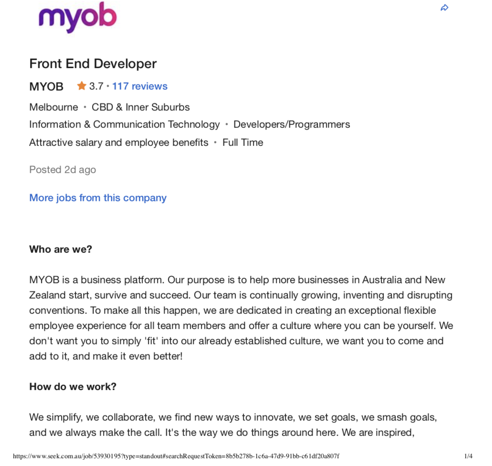
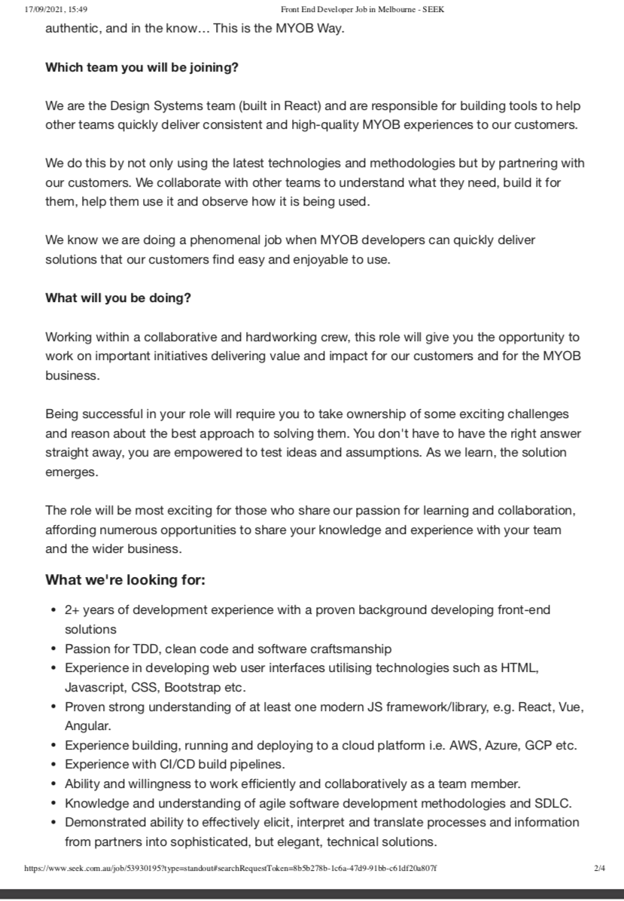
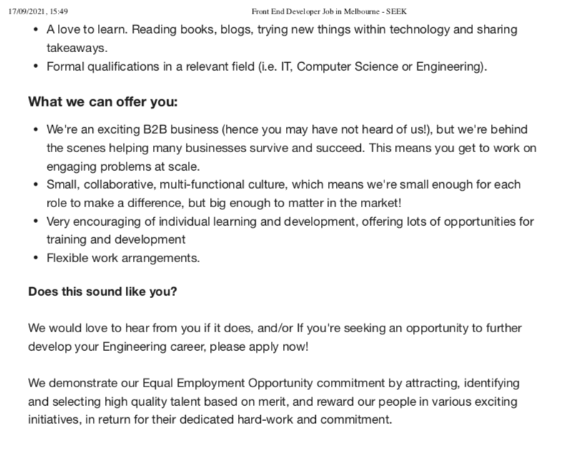

My name is Eliza Lai. My student ID is S3850886. My family is from East Timor, also known as Timor-Leste. I graduated high school in 2018. I do not own any pets but if I could keep any animal as a pet, I would choose a hedgehog. Did you know hedgehogs used to be called Urchins which led to the naming of Sea Urchins?
Since graduating high school, I have changed career paths at least 3 times. First, I studied nursing, then business and then studied accounting. IT never appealed to me as I always thought it was a male dominated field. My perception of IT completely changed one day when I was on social media and saw a lot of women who either taught themselves how to code or went through bootcamps to gain positions such as Software Engineer.
There wasn’t a particular event or person that sparked my interest in IT, but through social media, I was being exposed to people’s personal experiences in the IT field, especially women in a male dominated field. Being able to see how people completely change career paths and transitioning to IT without years of experience is very inspiring. I was able to learn how IT is important in our everyday lives and how it will continue to stay relevant.
I chose to study at RMIT, specially through Open Universities, because I have the ability to balance a work and study life. It is important to me to be able to financially support myself as well as build my future career. Being able to work and study has allowed me to learn time management skills, which I believe is an important skill to obtain over time. I have studied business through RMIT back in 2019 and I enjoyed the learning experience, however, due to COVID-19, unfortunately I lost motivation.
I hope to gain more knowledge in information technology, but as well as learn how to analyse problems and be able to solve them. Overall, I hope to obtain the necessary skills to become a competent IT professional.
-Myer-Briggs test: Mediator – INFP.
-Online learning style test: Visual/ Tactile learner
After completing the Myer-Briggs test, I found out that my personality is INFP. This helped build self-awareness and allowed me to identify my strengths and weaknesses. As for my learning style, I can identify what learning style is best suited for me. The results each test highlighted a trait which is being open to experience, which is important in a group/team setting as being open to new things encourages discussion.
The Front-End Developer role
  The Front-End developer role has the responsibility to use prior knowledge and experience to solve problems while working collaboratively in a team. This position appeals to me because one of the key tasks of a front-end developer is to optimize the user experience, which is to improve and enhance the usability of interactions on websites/apps.
The required skills, qualifications and experience required for the role include at least 2+ years of relevant experience in front-end development. The ability to develop web user interfaces utilising technologies e.g., HTML, JavaScript, CSS, Bootstrap etc, is important. Must show a high level of understanding of one modern JS framework/library e.g., React, Vue, Angular. Prior knowledge and experience using cloud platform e.g., AWS, Azure, GCP etc, and CI/CD build pipelines. Must also possess formal qualifications in a relevant field (IT, Computer Science or Engineering).
The skills and knowledge I currently have is a basic understanding of Python, HTML and JavaScript. As well as the ability to work efficiently with others in a team. Ultimately, I have the willingness to try new things within technology.
To obtain the skills and qualifications listed above, I will gain more knowledge in programming languages, while completing my formal qualification (Bachelor of IT). This will be achieved through completing short courses and through more practice. After the completion of my degree, I will build projects on different languages to demonstrate my understanding. To supplement my studies, I will gain more work experience by working as an intern or doing graduate programs in the related field.
The use of technology has changed over time and has improved the communication between people. Due to the covid-19 pandemic, the communication between people has been impacted, which has increased the use of virtual interaction. More specifically, the ability for students to connect and help each other has been restricted. Since the interaction between students has been limited, developing a web application where students create specific study groups with similar subjects and classes, this will allow for exchange of knowledge and therefore improving academic performance. The application is a video platform for students to handpick their collaborative groups based on their area of study. Students will be able to ask for assistance and inform each other.
During the global crisis of Covid-19, face-to-face learning and studying has been made difficult for many students due to restriction rules being enforced. As a result, students were required to rapidly adjust to remote learning. Apart from the transition of classroom learning to virtual learning being made compulsory, students are also unable to study in groups. Studying in a study group session is an effective learning tool as it makes it easier for students to absorb their lecture notes (Schoenherr, 2006). By introducing an app that creates study groups based on student’s area of study, this encourages collaborative discussions, and makes it easier to find study groups, especially during the pandemic.
This aspect will feature a list of different subjects or courses that students are undertaking. This selection will place students in a course-specific group that will have an array of smaller groups that are topic-specific. This will give students the autonomy to create and discuss their own queries regarding their subjects. Students will be given the ability to place a cap on the number of participants per room to enhance focus and collaboration and reduce distractions. Specific areas of studies will be based on secondary and tertiary education and can be divided by country, relevance, and year level. This includes a range of secondary areas such as: Biology, Chemistry, Mathematics and English. Tertiary areas will include business, IT, Medicine, Science.
This is a feature that is applied after a specific area of study is chosen. These break out rooms give students the ability to limit the participants in each room to mimic real-life study groups and enhance productivity. Along with collaborative cooperation, choices to alter the number of participants can allow for one-on-one study between students and make it more intensive or mimic tutoring.
Forums are designed to encourage written discussion and conversation between students. It can also be a place where students can find each other and join the study groups that they have created. In these forums, students can write a question or point of discussion in a post, anonymously if desired, under a specific area of study. Some other features that users can utilise include the ability to favourite important discussions for use later. Users can boost posts to increase its visibility to encourage other users to also participate in meaningful conversation. Posts include the option of uploading attachments, links, and text.
To ensure privacy, students can only privately message each other when they mutually accept friend requests from each other. Students have the opportunity to add each other from the study groups, however adding another student is only accessible once you only have had a study group with them. The feature of instant message in the study groups promote socialisation and creating bonds with each other, as well as, giving accessibility to those who don’t have the audio equipment or don’t want to turn on their audio. Visual information can also be relayed through instant messaging to support a variety of mediums that different subjects rely on.
This feature will include high quality HD video chat and audio to allow students to communicate in a great standard. It was also given students the choice to lower picture quality in the case that stable connection is compromised. Audio-only options are also available for those who do not have the adequate equipment or choose not to. The video chat function also gives students the ability to choose and share their screen to other people in the study group. This allows students to share their own works and make it easier to share ideas and present demonstrations. There is also an option to connect other social platforms to this app. An example of this would be the inclusion of music streaming.
Real-time connection between browsers where users can exchange audio/video streams can be achieved through web application or sites by using a technology called WebRTC. WebRTC is an open-source project, which is supported by Apple, Google, Microsoft, and Mozilla. It enables communications between different browsers and devices without the use of additional plug-ins. For user login and access control for the video chat application, Okta (a free authentication service) is used. Basic knowledge of JavaScript is required to create a video chat application. As for the web page of the application, HTML will be used to create one.
As students were forced to quickly adapt to virtual learning, the video-chat application will also be a new learning tool for students to effectively study together. By introducing a video chat application, specifically for students, it will make it easier for them to find study groups, ask questions about certain topics and create open discussions within the area of study. In addition, this will also promote networking with other students of similar interest, thus, give rise to new opportunities for students. Overall, sharing and exchanging knowledge with other students who are studying the same subjects will enhance learning experience, as traditional learning had to be substituted for online learning due to the global crisis.
Schoenherr, N., 2006. Discovering why study groups are more effective | The Source | Washington University in St. Louis. [online] The Source. Available at: